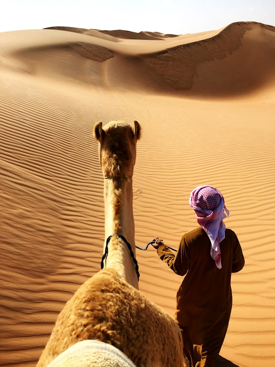
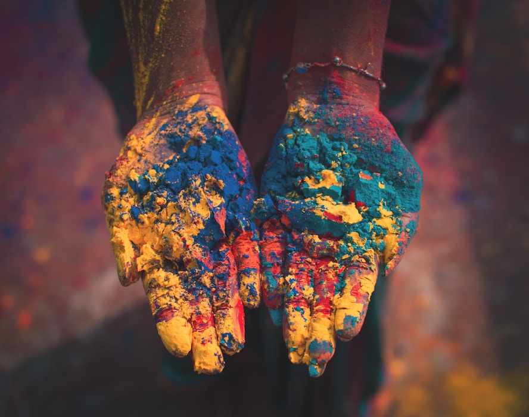
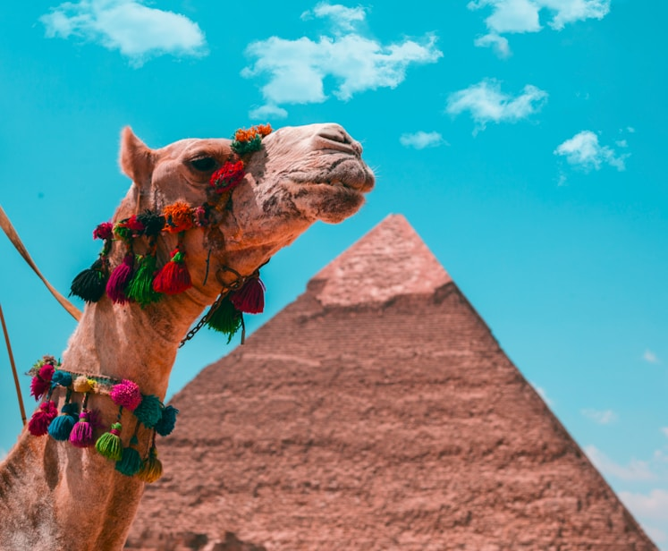
Egypt's culture is a remarkable blend of ancient civilization, religious heritage, and modern influences.
From historic mosques and traditional arts to contemporary city life, the country reflects a unique identity shaped by centuries of history, faith, and social values that continue to influence daily life today.
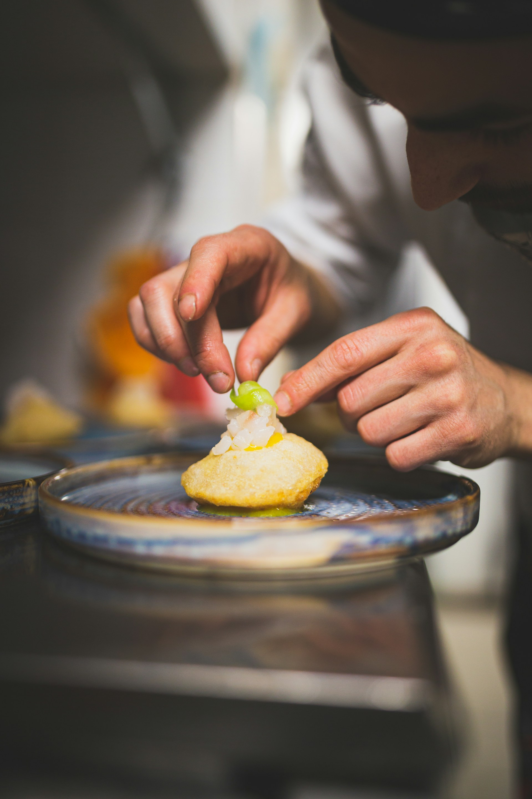
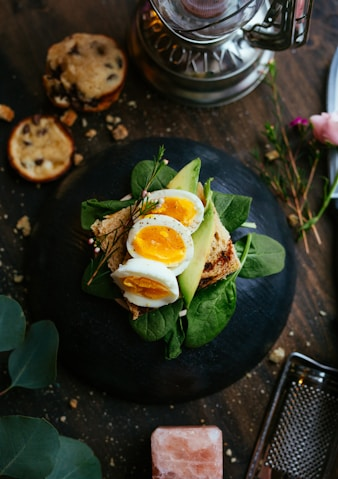
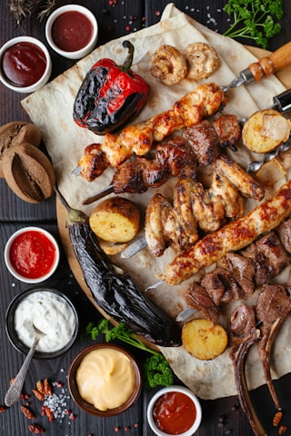
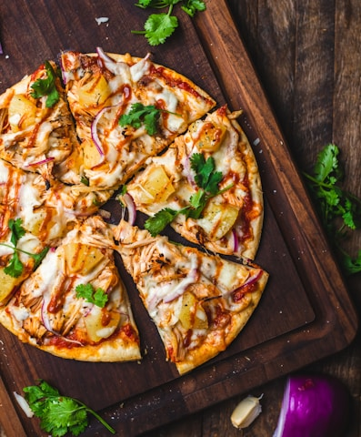
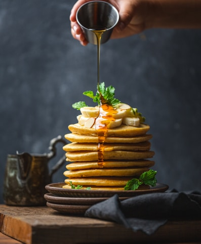
Egyptian cuisine blends rich history, culture, and tradition. Its diverse dishes offer a unique and memorable culinary experience.
Oum Ali is a traditional Egyptian dessert from the Mamluk era, often compared to bread pudding. Today, it is a beloved comfort food, especially during Ramadan.
It consists of puff pastry or bread soaked in milk and cream, sweetened with sugar, and topped with nuts and raisins. Baked until golden, it has a creamy interior and a lightly crisp surface. Unlike many Western bread puddings, it usually contains no eggs.
Key Nutrients (per serving ~478 kcal)
Benefits & Philosophy
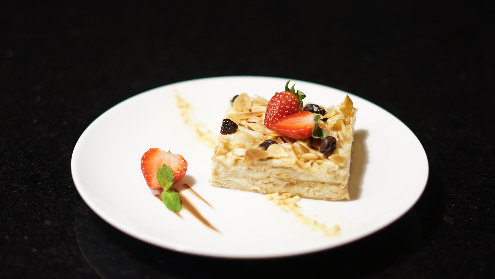
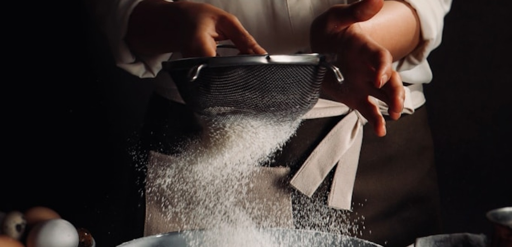
Ingredients
How to make it?
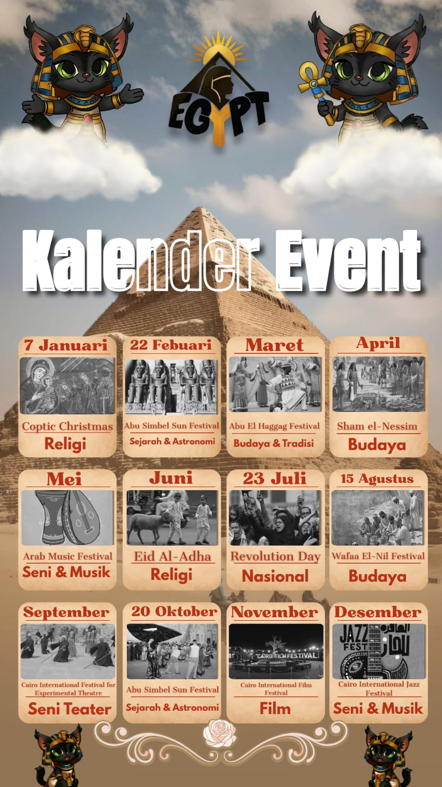
The Egypt Event Calendar presents a curated timeline of cultural, religious, historical, and artistic celebrations held throughout the year. From ancient-inspired festivals and national commemorations to vibrant music, film, and traditional events, each month highlights unique experiences that reflect Egypt's rich and diverse heritage. This calendar helps travelers plan their visit while discovering the dynamic traditions and modern spirit that continue to shape Egypt today.